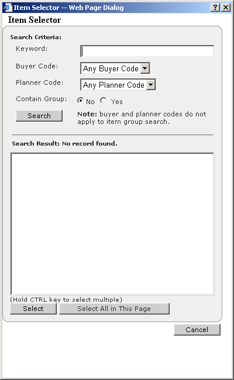
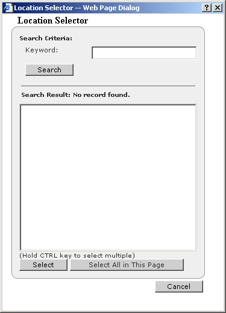

Subscribing to Impact Nodes
To subscribe to
Impact Nodes
1 In the Function drop-down list, select Business User.
2 Click the Personalization tab, then click Impact Nodes. The Impact Nodes page
appears.
· If there is more than one page of Impact Nodes, click Next to see more.
· If you want to filter the Impact Node list (making it shorter and easier to find the
Impact Nodes you want to subscribe to), click  . The Impact Node Filters
dialog box appears.
. The Impact Node Filters
dialog box appears.
. The Impact Node Filters
dialog box appears.
a Select Any in the Item list to search for Impact Nodes for all items
-or-
To search for Impact Nodes for a subset of items, click . The Item
Selector dialog box appears.
. The Item
Selector dialog box appears.
-or-
To search for Impact Nodes for a subset of items, click

· Enter any keyword(s) or select a Buyer Code or Planner Code, then click
Search.
· In the Search Result list, select one or more items, then click Select. The
selected items will appear in the Item list.
b Select Any in the Location list to search for Impact Nodes for all
locations
-or-
To search for Impact Nodes for a subset of locations, click. The
Location Selector dialog box appears.
-or-
To search for Impact Nodes for a subset of locations, click

· Enter any keyword(s), then click Search.
· In the Search Result list, select one or more items, then click Select. The
selected items will appear in the Location list.
c Click Submit.
3 For all Impact Nodes you want to subscribe to, select the check box in the Subscribe
column.
4 Click Save.
Note: If you do not see all the Impact Nodes you expect, you may have a filter applied.